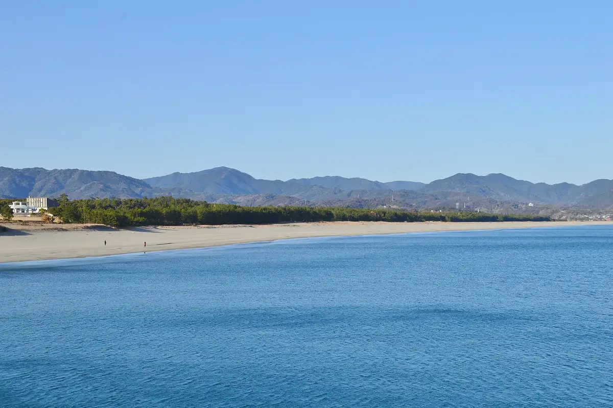
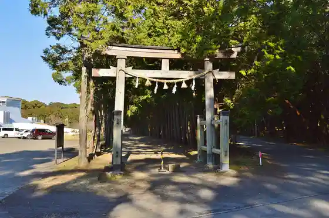
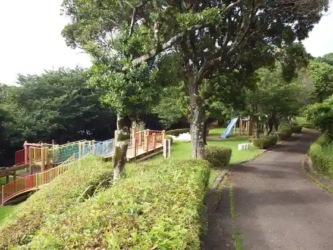

Kuroshio
Kuroshio · Kochi
Kuroshio
Highlighted on the Kochi map.

Stay
Nesuto Uesuto Garden Tosa
Tosa Saga Onsen
Umito Kura Su Yado
Minpaku Paresu
Kaji no Yado Kuroshio no Hitomune Kashi Yado
Surf House REALISTA
Dining
Farm
Izakaya Pokopen
Iroriya
Amami Tokoro Nagoya
Mun
Shoju Iori
Kuroshio Ichiban Kan
Sea56
O Konomi Yaki Tanaka
Yakitori Imajo Shoten
Izakaya Shinmi
Roadside Station Biosu Ogata Hinataya Shokudo
Roadside Station Nabura Tosa Saga
Nomi Tokoro
Oni Shu Ie
O Konomi Yaki Maruya
Experience
Tosa Seinandai Kibo Park
Sights
Irino Matsubara
Irino Coast
Beach Art Museum
Kamo Shrine

Saga Chiku
